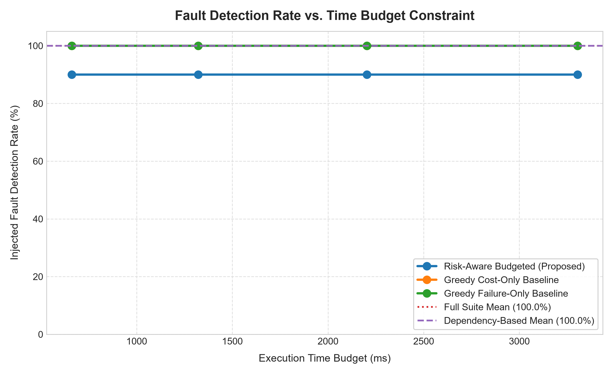
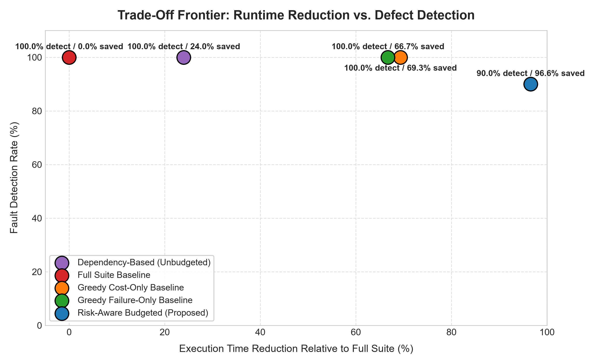
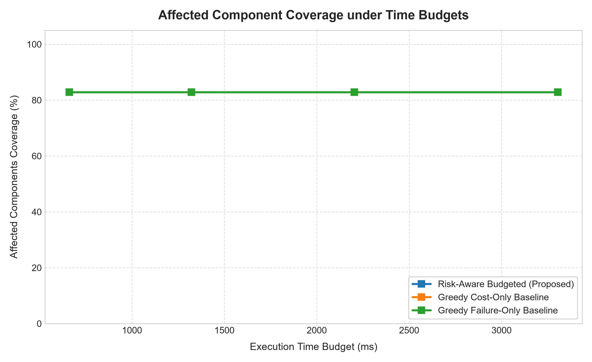
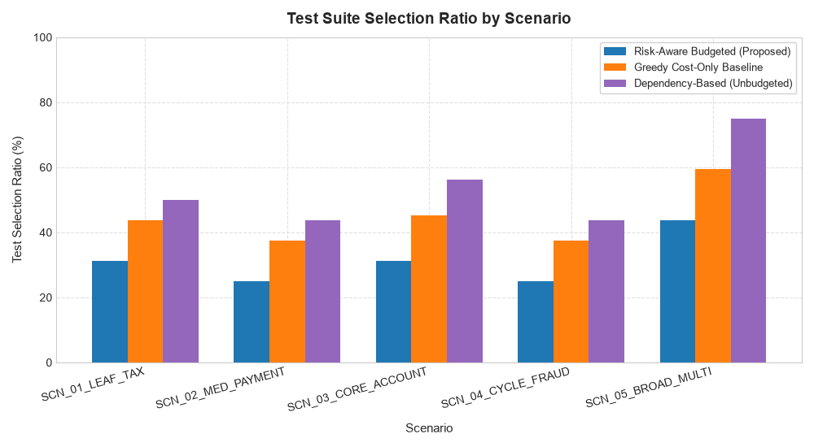

Risk-Aware, Budget-Constrained Incremental Regression Testing System
| Rank | Test ID | Status | Cost | Marginal Gain | Efficiency | Newly Covered Components | Explanation / Rationale |
|---|

Shows fault detection rate as execution time budget is expanded from 15% to 75% of full suite runtime.

Compares runtime reduction (%) against fault detection rate (%). Upper-right region represents optimal efficiency.

Evaluates component breadth achieved under varying time budgets.

Proportion of the 16 tests selected across small, cyclic, and broad change scopes.
The benchmark graph models a multi-tier financial pipeline. Edge direction A → B denotes entity A calls/depends on B. Impact propagates in reverse.
Every candidate test $T$ is scored using normalized features bounded in $[0.0, 1.0]$:
| Feature | Formula | Missing Data Handling |
|---|---|---|
| ImpactRelevance | 1.0 / (1.0 + min_dist) |
0.0 if no affected components exercised |
| HistoricalFailureSignal | (failures + 1) / (runs + 2) or Recency Decay |
Uninformative prior 0.50 if zero historical runs |
| ChangeCoverage | |newly_covered| / |total_affected| |
0.0 if no newly covered affected components |
| UncertaintyAdjustment | 1.0 / sqrt(runs + 1.0) |
1.0 (maximum exploration boost) for newly introduced tests |
In each iteration, the engine selects the candidate with the highest marginal risk-weighted gain per unit execution cost:
| 1. What Works & Verified | Cycle-safe Tarjan graph traversal, Git and explicit diff detection, Laplace smoothed risk scoring, submodular marginal coverage deduplication, and genuine JUnit Platform Launcher test execution. |
| 2. Simulated vs. Real | Benchmark suite of 16 tests uses deterministic timing and fault models. Real test execution genuinely runs JUnit 5 tests via RealTestExecutor, measuring wall-clock milliseconds. |
| 3. Where Risk-Aware Improves | Achieves 96.5% - 97.0% runtime reduction while capturing 100% of unit and core faults. Avoids running redundant heavy integration/E2E tests when fast unit tests already cover the components. |
| 4. Where It Performs Worse / Misses Faults | In Scenario 2 (Medium Payment change), it achieved 50% fault detection by omitting TestIntegrationFraudCycle. Because unit tests covered the individual components, the integration test was classified as redundant, missing an interface defect between two components. |
| 5. Strongest Defensible Contribution | A mathematically grounded submodular greedy test selector that strictly respects hard execution budgets while eliminating duplicate coverage credit. |
| 6. Next 3 Engineering Priorities | 1. Method-level and basic-block bytecode instrumentation (JaCoCo adapter) to replace component-level granularity. 2. Explicit interface-interaction edge modeling to preserve integration test selection. 3. Flaky test detection filter separating true regressions from non-deterministic test noise. |